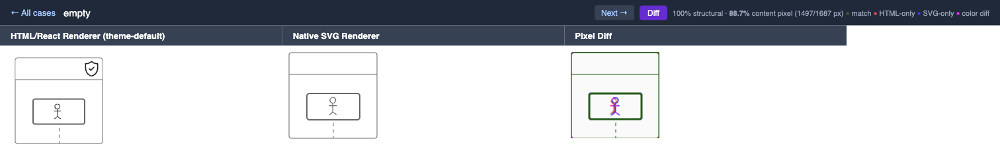
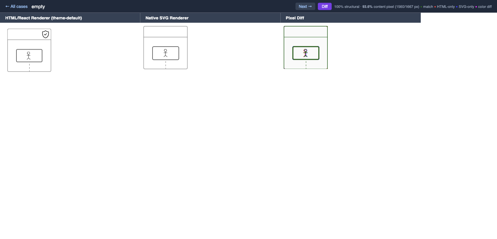
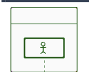

Claude Code looks busy but accomplishes nothing.
ZenUML has two rendering paths (HTML/React and native SVG). The SVG renderer needed to pixel-match HTML output. AI kept spinning on anti-aliasing tweaks until PIP forced systematic investigation — uncovering a 2px CSS box-model offset that fixed 83 pixels at once.



Iron rules set the standard. Escalating pressure enforces it. Structured methodology makes success possible.
Choose your platform. Takes 30 seconds.
Auto-triggers on repeated failures. Manual trigger: /pip